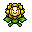

Pokédex / #192
Sunflora #192
Grass
In the daytime, it rushes about in a hectic manner, but it comes to a complete stop when the sun sets.
Generation 2 · Johto

Stats
| Attack | 75 | |
|---|---|---|
| Defense | 55 | |
| Sp. Atk | 105 | |
| Sp. Def | 85 |
In the wild
| Wild level | 30–40 |
|---|---|
| HP | 75 |
| Experience | 10 |
| Egg groups | Grass |
Evolution
- Evolves from Sunkern at level 25, with a Sun Stone.
Moves
| Level | Move | Type | Category | Power | Energy | Cooldown | Effect | |
|---|---|---|---|---|---|---|---|---|
| 1 | Tackle | Normal | Physical | 15 | 15 | 1s | Tackle is one of the most common and basic moves a Pokemon learns. It deals damage with no additional effects. | |
| 5 | Absorb | Grass | Special | 20 | 35 | 5s | Absorb deals damage and the user will recover 50% of the HP drained. | |
| 10 | Leech Seed | Grass | Status | 5 | 65 | 20s | Leech Seed plants a seed on the target. At the end of each turn that the target is under the effect of Leech Seed, the target's HP will be drained, and the same amount of HP will be restored to the target's opponent. Leech Seed will not work against Grass-type Pokemon. | |
| 15 | Razor Leaf | Grass | Physical | 18 | 60 | 7s | Razor Leaf deals damage and has an increased critical hit ratio. | |
| 20 | Grass Whistle | Grass | Status | – | 100 | 60s | Grass Whistle puts the target to sleep. | |
| 30 | Ingrain | Grass | Status | – | 100 | 120s | The user lays roots that restore its HP on every turn. | |
| 35 | Mega Drain | Grass | Special | 40 | 65 | 12s | Mega Drain inflicts damage, and 50% of the damage dealt to the target is restored to the user. The amount of HP recovered is always rounded down. | |
| 40 | Flower Shield | Fairy | Status | – | 100 | 60s | The user raises the Defense stat of all Grass-type Pokemon in battle with a mysterious power. | |
| 45 | Giga Drain | Grass | Special | 75 | 95 | 12s | Giga Drain deals damage and the user will recover 50% of the HP drained. | |
| 50 | Bullet Seed | Grass | Physical | 25 | 85 | 17s | Bullet Seed does damage, hitting 2-5 times per use. | |
| 55 | Leaf Storm | Grass | Special | 13 | 140 | 32s | Leaf Storm deals damage but lowers the user's Special Attack by two stages after attacking. | |
| 60 | Solar Beam | Grass | Special | 120 | 125 | 27s | Solar Beam deals damage but the user can't attack on the next turn. | |
| 65 | Petal Dance | Grass | Special | 120 | 120 | 20s | The user attacks for 2-3 turns and then becomes confused. | |
| 70 | Double-Edge | Normal | Physical | 120 | 120 | 18s | Double-Edge deals damage and has no secondary effect. |
Field abilities
FlashCut
Special abilities
ChlorophyllSolar Power
Egg moves
BideCurseEncoreEndureGrass WhistleGrassy TerrainHelping HandIngrainLeech SeedMorning SunNatural GiftNature PowerSweet Scent
Technical machines
BideBullet SeedDouble EdgeDouble TeamEnergy BallGiga DrainHyper BeamLight ScreenMimicRageRestSafeguardSludge BombSolar BeamSubstituteSwords DanceToxic
Drops
| Item | Amount | Chance | |
|---|---|---|---|
| seed | 1–4 | 92.6% | |
| bamboo leaves | 1 | 55.6% | |
| frostbite herb | 1 | 55.6% | |
| leaf pendant | 1 | 27.8% | |
| leaf | 1 | 15.4% | |
| cure herb | 1 | 13.9% | |
| bunch of ripe rice | 1 | 11.1% | |
| gracidea | 1 | 10.3% | |
| revival herb | 1 | 10.3% | |
| onigiri | 1–5 | 5% | |
| sunflora doll | 1 | 0.1% | |
| Meadow Plate | 1 | 0.05% | |
| Sun Stone | 1 | 0.02% | |
| held miracle seed | 1 | 0.02% | |
| TM 20 | 1 | 0.01% | |
| TM 21 | 1 | 0.01% | |
| TM 56 | 1 | 0.01% |